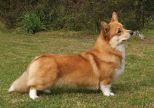
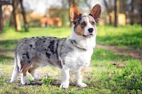

Tietoja Welsh corgi pembrok on brittiläinen koirarotu. Welsh corgista on aikojen kuluessa syntynyt kaksi muunnosta: pembroke ja cardigan, joita nykyisin jalostetaan erillisinä rotuina. Corgit ovat pienehköjä, lyhytraajaisia karjakoiria, joita nykyään pidetään lähinnä seurakoirina.
Värit: Fawn, Black & tan, Soopeli, Punainen Alkuperä: Pembrokeshire Luonne: Leikkisä, Sinnikäs, Ystävällinen, Karski, Seurallinen, Suojeleva Paino: Uros: 10–14 kg, Naaras: 10–13 kg Elinikä: 12–15 vuotta Korkeus: Uros: 25–30 cm, Naaras: 25–30 cm. (Lähde: HANKIKOIRA.FI)
Welsh corgi cardigan on kahdesta welsh corgi -koirarodusta harvinaisempi. Se on hiukan suurempi kuin welsh corgi pembroke. Welsh corgit ovat Walesista kotoisin olevia vanhoja, lyhytjalkaisia paimenkoirarotuja.
Värit: Merle, Brindle-valkoinen, Blue merle valkoisin merkein, Puna-valkoinen, Soopeli-valkoinen, Mustavalkoinen Luonne: Älykäs, Valpas, Hellä, Aulis, Aktiivinen, Seurallinen Paino: Naaras: 11–15 kg, Uros: 14–17 kg Korkeus: Naaras: 25–33 cm, Uros: 25–33 cm Elinikä: 12–15 vuotta Alkuperä: Wales Alkuperäinen käyttö: karjanajo, yleiskäyttöinen työkoira. (Lähde: HANKIKOIRA.FI)